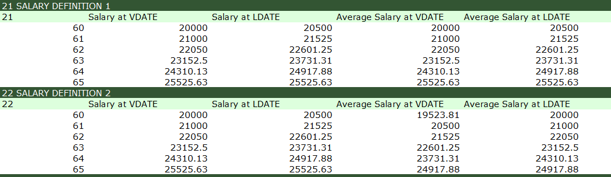
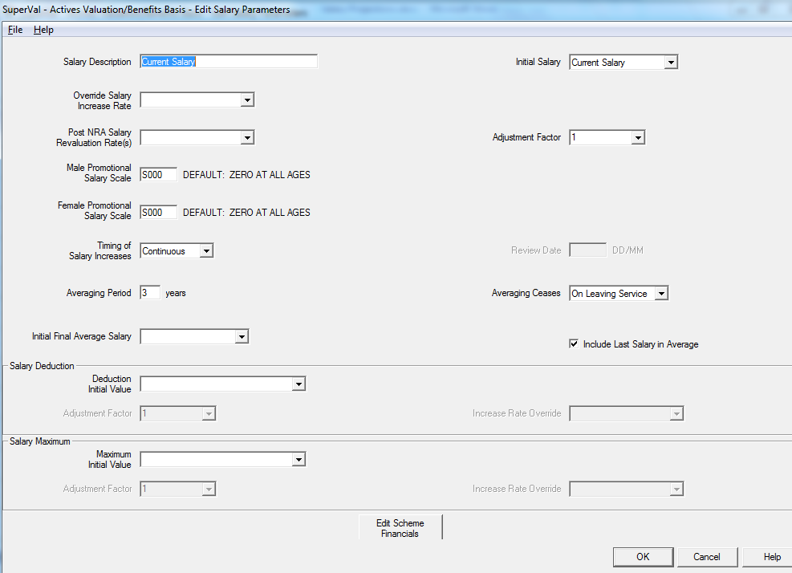
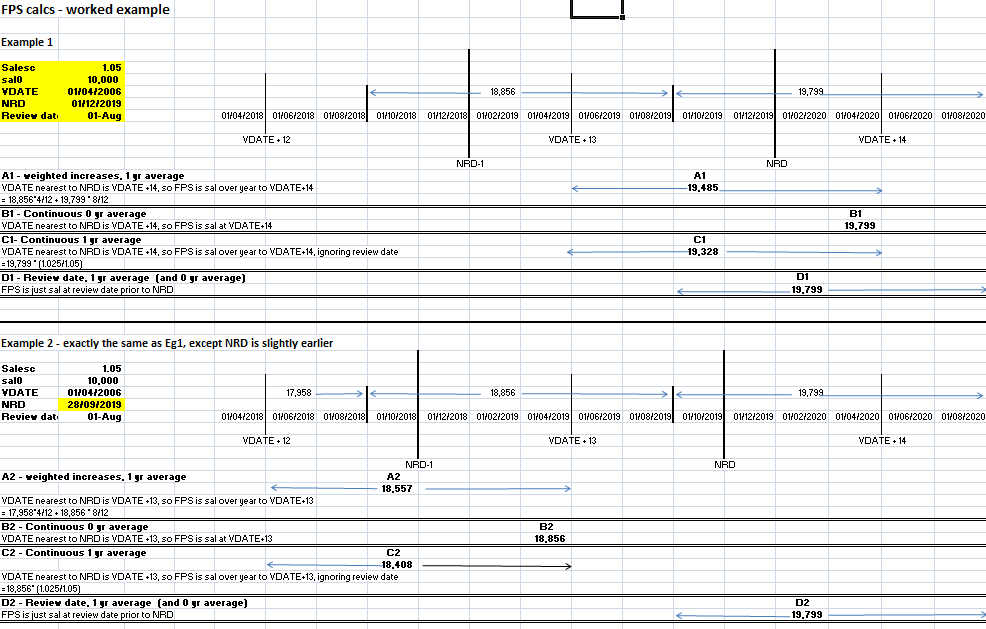
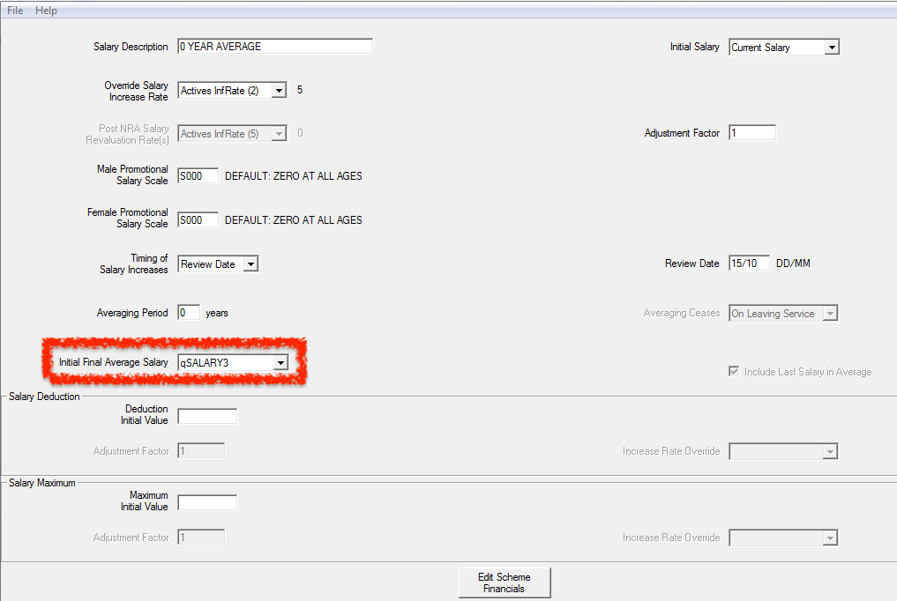
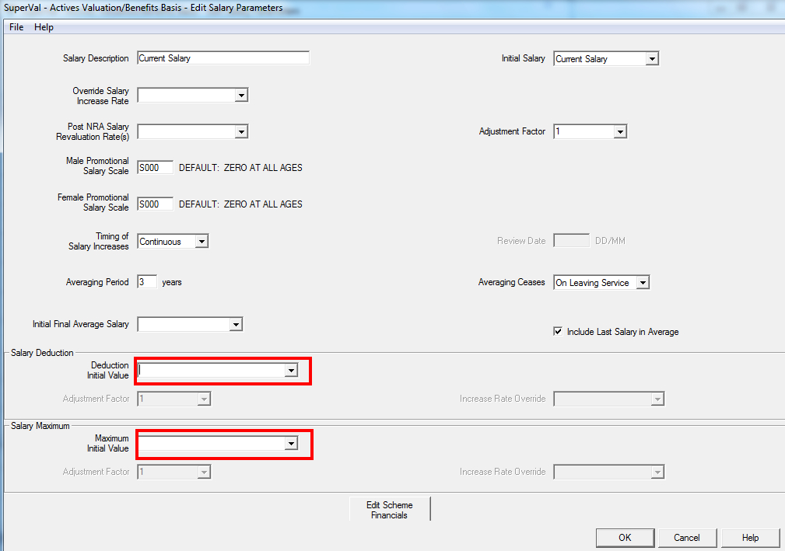
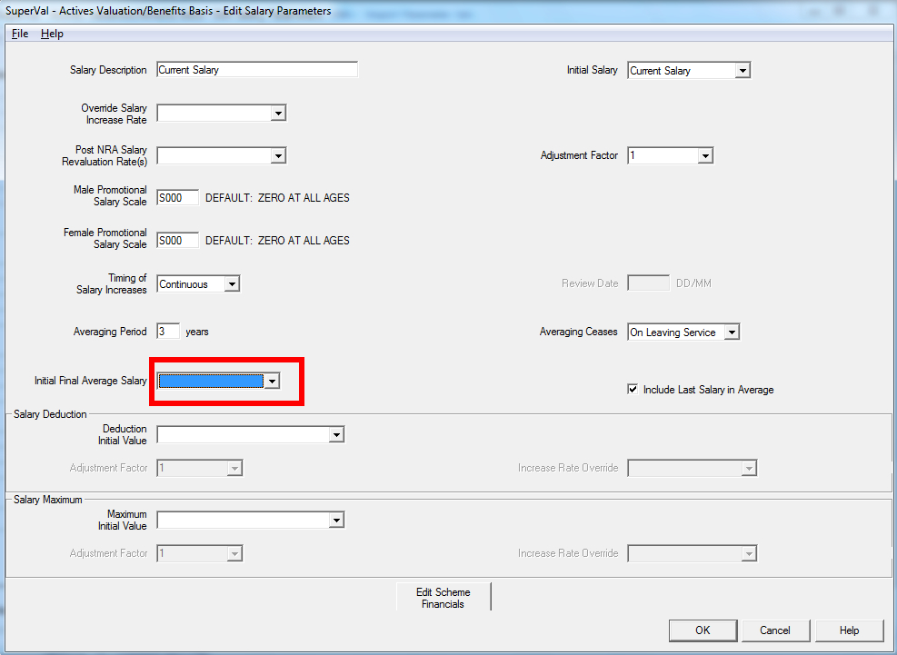

Salary projections¶
This article covers the Salary Projections for the Actives Module.
SuperVal has a number of different options for defining salaries for Active members. This article explains how to use these different parameters.
SuperVal allows you to define up to nine different salaries. Within each salary definition, there is substantial flexibility, designed so you can allow for different types of averaging as well as different caps and offsets. You can also to take account of current Final Pensionable Salary (FPS) when calculating FPS at later dates.
This article is based on V9.25 of SuperVal.
Any screenshots from earlier versions are not materially different.
VarPrints¶
The VarPrint (or AccPrint for accrued calculations) sets out in detail how the salary is projected under each of the salary projections coded for a particular member (or members).
The VarPrint/AccPrint is obtained by:
- When setting up the data file to be used adding a star in the last column for the member you wish to review.
- When setting up a Valuation Batch select either
LimitedorFullfor the Test Valuation Run field. Selecting Limited will produce an individual member print with data for every fifth age between Valuation Date and Normal Retirement Date. Selecting Full will produce an individual member print with data for every age between Valuation Date and Normal Retirement Date.
The VarPrint can be opened in either Excel or HTML and the section which shows the salary projections in section 2\(n\) where \(n\) is the salary number. Below is an illustration of the output for salaries 1 and 2.

The first two columns show projected salaries at each age without any averaging. LDATE is mid-year, except for year of retirement, where it is averaged over the same period as the VDATE figure. See Appendix for worked examples.
Averaging-period options¶
Explanation and examples of calculations of FPS and NRD¶
All the examples in this section are based on a 1-year averaging period. There are examples of longer averaging periods in section 4.
Below is a screenshot showing the salary definition screen:

- Initial Salary
-
Enter details of the current salary.
- Override Salary Increase Rate
-
You can enter an override for the main salary increase rate entered on the Financial tab. This will only apply to this salary definition.
- Promotional Scale
-
You can enter a promotional scale that will be applied in addition to the main salary increase rate.
This can either be an age-related Promotional Scale (
Sxxxtable) or a Service-Related Promotional Scale (STxxxtable). The Service-Related Promotional Scale is only available to GAD Users. - Timing of Salary Increase and Review Date
-
SuperVal gives you three options for averaging. These are:
- Weighted Average
-
This works out the Final Pensionable Salary over the relevant period up to the VDATE anniversary nearest NRD, taking account of the review date specified. (You must enter a Review Date.)
- Review Date
-
This will average salary over the number of review dates specified, with the last salary used being the one on the review date before the actual NRD.
- Continuous
-
This is like weighted, i.e. it works out Final Pensionable Salary over the averaging period ending on the VDATE anniversary nearest NRD, but it ignores the review date. Instead it uses the averaging period given and then adjusts by (1+½S) ÷ (1+S). (Unless averaging period is zero, in which case no averaging is applied).
- Averaging Period
-
Enter the averaging period (in whole years) that SuperVal should use.
- Averaging ceases on
-
Select from either the point of exit or Normal Retirement Date.
- Include the Last Salary in the Averaging Period?
-
If unchecked, then SuperVal will add 2 years to the averaging period above. If checked, then the salary is averaged only over the period specified.
For example, checked and a 5-year averaging period is the same as unchecked and a 3-year averaging period. (They would both result in a salary being on average 2.5 years ago.)
- Salary Deductions
-
Enter a Deduction Initial Value, any adjustment factor and/or a Global Parameter that contains the rate of increase for the Deduction.
- Salary Maximum
-
Enter a Maximum Initial Value, any adjustment factor and/or a Global Parameter that contains the rate of increase for the Maximum.
Worked example of calculation of FPS and NRD¶
The next page shows how Final Pensionable Salary (FPS) is calculated for each of salaries shown below. The calculations have been shown for two members, who are identical except for their Date of Birth. They have been set so that the Valuation Date anniversary closest to NRD is the one AFTER NRD for member 1 and the one BEFORE NRD for member 2.
Relevant details are:
| Description | Member 1 | Member 2 |
|---|---|---|
| Salary Escalation | 5% | |
| VDATE | 01/04/2006 | |
| Salary at VDATE | £10,000 | |
| Review Date | 1 August | |
| Salary over year ending 01/08/2018 | 10,000 × 1.0512 = £17,958 |
|
| Salary over year ending 01/08/2019 | 10,000 × 1.0513 = £18,856 |
|
| Salary over year ending 01/08/2020 | 10,000 × 1.0514 = £19,799 |
|
| NRD | 1 December 2019 | 28 September 2019 |

Using the Initial Final Average Salary field¶
If a member is due to leave or retire from the scheme soon after the valuation date then in order to calculate Final Pensionable Salary (FPS), SuperVal will need to know what the member’s salary was in the year(s) before VDATE.
For example:
Member Aged 65 = NRA
Salary at VDATE = £10,000
FPS is based on a 3-yr average (Review Date)
Salary Escalation is 5%
In this case, SuperVal will calculate Final Pensionable Salary at retirement as:
£10,000 £10,000
£10,000 + ------- + -------
1.05 1.05²
--------------------------- = £9,531
3
SuperVal effectively rolls back the current salary using the escalation rate provided to determine Final Pensionable Salary.
There will be some instances where you assume a high proportion of members leaving or retiring close to the VDATE (in particular for discontinuance and PPF Valuations), and to cater for this, SuperVal allows you to specify what the actual FPS at VDATE is. The data item is specified in the Initial Final Average Salary field.

If present, this data item will override the Source Data Item for PPF and discontinuance runs (i.e. when date of exit from the Scheme is VDATE). For exit dates after VDATE, SuperVal will blend the two data items as appropriate.
For example:
FPS at VDATE = £30,000
Current Salary = £40,000
FPS is based on 3 year average
Ignoring increases, FPS for a member due to retire on VDATE will just be £30,000
- FPS for a member due to retire in 1 year
-
(£30,000 + £30,000 + £40,000) ÷ 3 = £33,333.33 - FPS for a member due to retire in 2 years
-
(£30,000 + £40,000 + £40,000) ÷ 3 = £36,667.67 - FPS for a member due to retire in 3 years
-
(£40,000 + £40,000 + £40,000) ÷ 3 = £40,000
Promotional salary scale¶
Each salary definition in SuperVal allows you to specify a Promotional Salary Scale for both males and females. This is an age-related scale, which may be used for example to allow for salaries to increase at a higher rate for younger members.
One important note is that SuperVal will use the member’s age nearest VDATE in order to determine which factor to use for the first salary increase after VDATE:
Say the scale is:
Age Salary Scale
-------------------
57 -0.10
58 -0.05
59 0.05
60 0.10
Using the following data
Member 1
---------------------------------------------
VDATE 1 April 2006
Review Date 31 December
Averaging Period 1 year (Review Date)
Salary £10,000
Salary Increase Rate 5%
NRA 60
Member 1¶
- DOB
-
01/01/1948; so age at VDATE = 58.00 (age nearest 58)
- FPS
-
= Salary at review date prior to NRD (31/12/2007)
= £10,000 × 1.052 × (1 + SF58) × (1 + SF59)
= £10,000 × 1.052 × 0.95 × 1.05
= £10,997
Member 2¶
- DOB
-
29/09/1948; so age at VDATE = 58.48 (age nearest 58)
- FPS
-
= Salary at review date prior to NRD (31/12/2007)
= £10,000 × 1.05 × (1 + SF58) × (1 + SF59)
= £10,997
Note that SuperVal uses the Promotional Scale at age 58 for the increase due on 31 December 2006 despite the fact that the member is actually over 59 on that date.
Offset and capping options¶
For each salary defined, SuperVal allows you to specify either a deduction and/or a maximum amount.

If no increase rate is entered then the maximum and the deduction will be increased in line with the salary-increase rate entered in the Override Salary Increase Rate specified above or the value entered for the Salary Increase Rate on the Financial Assumptions tab if this is blank.
Order of the maximum and the deduction¶
Note that
- the maximum will always be applied before the deduction.
- Averaging Period and Review Date/ Continuous/ Weighted apply when calculating the maximum
- Averaging Period and Review Date/ Continuous/ Weighted also apply when calculating the deduction.
- The maximum is applied by comparing FPS based on Maximum Amount with FPS based on “Source data item” i.e. you do not compare each year’s salary to the maximum and take the greater of the two.
The above points are illustrated by the worked example below. This starts off with one of the definitions used in the earlier example, and then looks at various combinations of averaging period, deduction and maximum.
Worked example¶
Showing how deduction and maximum are applied.
Calculate FPS at NRD for each of the salary definitions given below for a member with the following details:
VDATE 1 April 2006
NRD 1 December 2019
SAL0 £10,000
Assume Salary escalation of 5% p.a.
| Salary Projection Information | Salary1 | Salary2 | Salary3 | Salary4 | Salary5 | Salary6 |
|---|---|---|---|---|---|---|
| Initial Salary | Current Salary (Data) | Current Salary (Data) | Current Salary (Data) | Current Salary (Data) | Current Salary (Data) | Current Salary (Data) |
| Override Salary Increase Rate | ||||||
| Averaging Period | 1 | 3 | 3 | 1 | 1 | 1 |
| Averaging Ceases | On Leaving Service | On Leaving Service | On Leaving Service | On Leaving Service | On Leaving Service | On Leaving Service |
| Timing of Salary Increases | Weighted | Weighted | Weighted | Weighted | Weighted | Weighted |
| Review Date | 01/08 | 01/08 | 01/08 | 01/08 | 01/08 | 01/08 |
| Include Last Salary in Average | Yes | Yes | Yes | Yes | Yes | Yes |
| Adjustment Factor | n/a | n/a | n/a | n/a | n/a | n/a |
| Deduction Initial Value | 5,000 | 5,000 | 0 | |||
| Deduction Increase Rate | n/a | n/a | 5% | n/a | 5% | n/a |
| Deduction Adjustment Factor | 1.0 | 1.0 | 1.0 | 1.0 | 1.0 | 1.0 |
| Maximum Initial Value | 19,000 | 19,000 | £5,000 | |||
| Maximum Increase Rate | 0% | 0% | 5% | |||
| Maximum Adjustment Factor | 1.0 | 1.0 | 1.0 | 1.0 | 1.0 | 1.0 |
Solution
Member 1
----------------
Sal0 10,000
Sal1 10,500
... ...
Sal11 17,103
Sal12 17,959
Sal13 18,856
Sal14 19,799
- FPS1
-
\(= \frac{8}{12} × Sal14 + \frac{4}{12} × Sal13\)
\(= 19,485\)
- FPS2
-
\(= (\frac{8}{12} × Sal14 + Sal13 + Sal12 + \frac{4}{12} × Sal11) ÷ 3\)
\(= 18,572\)
- FPS3
-
\(= \frac{FPS2}{2}\)
\(= 9,286\)
The Deduction is half of the basic salary and has the same increase rate. The fact that FPS3 is half of FPS2 shows that the 3-year averaging period is applied to the deduction as well as the basic salary.
- FPS4
-
= Maximum Salary = 19,000
SuperVal does not compare maximum with each year’s salary when calculating FPS.
So FPS4 is not \(\frac{8}{12} \times \min(8856, 19000) + \frac{4}{12} \times \min(19,799, 19000) = £18,904\).
Instead, it compared FPS based on basic salary with the FPS based on the maximum amount.
So \(FPS4 = \min(19485, 19000)\)
- FPS5
-
\(= FPS4 – \frac{FPS1}{2} = 9,257\)
Shows that the maximum is applied before the deduction.
- FPS6
-
\(= \frac{FPS1}{2} = 9,742\)
Shows that the averaging period is also applied to the maximum.
Algebra and worked examples¶
Showing how all salaries are projected in the VarPrint
Notation¶
- \(n\)
-
The averaging period
- \(j\)
-
The rate of salary increase
- \(FAF\)
-
The Final Averaging Factor over \(n\) years:
Review-date increases:
\[\frac{\ddot{a}^{j}_{n}}{n}\]Continuous increases: †
\[\frac{1+½j}{1+j} \times \frac{\ddot{a}^{j}_{n}}{n}\] - \(S\)
-
The pensionable salary at valuation date
- \(t\)
-
Under review-date increases, the number of review-date anniversaries from the valuationdate to NRD. For the continuous-increases case, \(t\) is the number of years from the valuation date to the anniversary of the valuation date nearest the NRD.
- \(S_x(C)\)
-
The salary figure at age \(x\) under column C.
Note When n = 0 the FAF = 1.
† The formula for the continuous-increases FAF comes from the following:
Review-date increases¶
The salary projections, as they appear in VarPrint are as follows:
| Age | Salary at VDATE (A) | Salary at LDATE (B) | Average Salary at VDATE (C) | Average Salary at LDATE (D) |
|---|---|---|---|---|
| \(x\) | \(S\) | \(S[1+a.j]\) | \(S.FAF\) | \(S_x(C).[1+ a.j]\) |
| \(x+1\) | \(S(1+j)\) | \(S(1+j)[1+a.j]\) | \(S(1+j).FAF\) | \(S_{x+1}(C).[1 + a.j]\) |
| \(x+2\) | \(S(1+j)^2\) | \(S(1+j)^2[1+a.j]\) | \(S(1+j)^2.FAF\) | \(S_{x+2}(C).[1+a.j]\) |
| … | … | … | … | … |
| NRA | \(S(1+j)^t\) | \(S(1+j)^t\) | \(S(1+j)^t.FAF\) | \(S_{NRA}(C)\) |
\(a\) is the proportion of a year, working in days, to represent the time between the review date and the valuation date (or its next anniversary). If the review date and the valuation date coincide then \(a=0\).
Continuous increases¶
The salary projections, as they appear in VarPrint are as follows:
| Age | Salary at VDATE (A) | Salary at LDATE (B) | Average Salary at VDATE (C) | Average Salary at LDATE (D) |
|---|---|---|---|---|
| \(x\) | \(S\) | \(S(1+½j)\) | \(S.FAF\) | \(S_x(C)(1+½j)\) |
| \(x+1\) | \(S(1+j)\) | \(S(1+j)(1+½j)\) | \(S(1+j).FAF\) | \(S_{x+1}(C)(1+½j)\) |
| \(x+2\) | \(S(1+j)^2\) | \(S(1+j)^2(1+½j)\) | \(S(1+j)^2.FAF\) | \(S_{x+2}(C)(1+½j)\) |
| … | … | … | … | … |
| NRA | \(S(1+j)^t\) | \(S(1+j)^t\) | \(S(1+j)^t.FAF\) | \(S_{NRA}(C)\) |
¶
¶
Weighted review increases¶
The salary projections, as they appear in VarPrint are as follows:
| Age | Salary at VDATE (A) | Salary at LDATE (B) | Average Salary at VDATE (C) | Average Salary at LDATE (D) |
|---|---|---|---|---|
| \(x\) | \(S\) | \(S[1+a×j]\) | \(S.FAF.[1+a×j]÷(1+j)\) | \(Sx(C)×(1+½j)\) |
| \(x+1\) | \(S(1+j)\) | \(S(1+j)[1+ a×j]\) | \(S.FAF.[1+a×j]\) | \(Sx+1(C)×(1+½j)\) |
| \(x+2\) | \(S(1+j)^2\) | \(S(1+j)^2[1+a×j]\) | \(S(1+j).FAF.[1+a×j]\) | \(Sx+2(C)×(1+½j)\) |
| … | … | … | … | … |
| NRA | \(S(1+j)^t\) | \(S(1+j)^t\) | \(S(1+j)^{t-1}.FAF.[1+a×j]\) | \(S_{NRA}(C)\) |
Final Average Salary data source¶

This field works in conjunction with any of the three salary increase methods.
SuperVal will take the current-salary data item, the accurate final-average data item and calculate the projected final average salary as follows.
| \(z\) | Averaging period applicable |
| \(fasn\) | Final average salary calculated from current salary at time \(n\) |
| \(FASO\) | Accurate final average salary at the valuation date |
| \(FASn\) | Final average salary used in SuperVal \(= fasn + (FASO – faso).\frac{(z-n)}{z}\) |
The final term \(\frac{(z-n)}{z}\) has a minimum value of zero.
For example, say that:
Current salary is £10,000
FAS data source is £30,000
Salary escalation is 5% pa
3-year average period
Member is one year from retirement
Step 1 Calculate average salary at VDATE and retirement, based on current salary alone:
at VDATE: \(\frac{1}{3} × (10,000 + \frac{10,000}{1.05} + \frac{10,000}{1.05^2}) = £9,351.37\)
at retirement: \(\frac{1}{3} × (10,000 × 1.05 + 10,000 + \frac{10,000}{1.05}) = £10,007.94\)
Step 2 Calculate excess of actual Final Average Salary over the estimated figure as at VDATE:
Step 3 Spread this amount over the averaging period and add it on to the original figure:
Final Av sal at ret = \(£10,007.94 + 20,468.63 × \frac{2}{3} = £23,653.69\)
Using the notation from above:
fasn = £10,007.94
FASO = £30,000
Faso = £9,351.37
z = 3 and n = 1
Appendix – examples¶
Data Value
-----------------------------------------------------------------
DOB 1 December 1959
NRD 1 December 2019
Salary at the VDATE (SAL0) £10,000
Definition of Final Pensionable Salary Average of last 3 years
VDATE 1 April 2006
Salary Increase Rate 5%
Review Date Increases¶
Suppose that the review date is 01 August each year.
Then the VarPrint will show the projection of the salary as follows:
| Age | Salary at VDATE (A) | Salary at LDATE (B) | Average Salary at VDATE (C) | Average Salary at LDATE (D) |
|---|---|---|---|---|
| 46 | 10,000 | 10,333 | 9,531 | 9,849 |
| 47 | 10,500 | 10,850 | 10,008 | 10,341 |
| 48 | 11,025 | 11,392 | 10,508 | 10,858 |
| … | … | … | … | … |
| 60 | 19,799 | 19,799 | 18,871 | 18,871 |
The calculated items under notation required here are as follows:
\(a = 243 ÷ 365 = 0.665753\) (243 days from review to anniversary of VDATE)
FAF= \(\ddot{a}^{5\%}_{3} ÷ 3 = 0.953137\)
Examples of some of the calculations above:
| at | value | calculation | |
|---|---|---|---|
| A | 47 | 10,500 | 10,000 × 1.05 |
| B | 47 | 10,850 | 10,000 × 1.05 × (1 + 0.665753 × 0.05) |
| C | 47 | 10,008 | 10,000 × 1.05 × 0.953137 |
| D | 47 | 10,341 | 10,000 × 1.05 × 0.953137 × (1+ 0.665753 × 0.05) |
| D | 60 | 18,871 | 10,000 × 1.0514 × 0.953137 |
Column D would be used for the calculation of the benefit amounts.
Continuous Increases¶
If continuous salary increases are allows for then the project becomes as follows:
| Age | Salary at VDATE (A) | Salary at LDATE (B) | Average Salary at VDATE (C) | Average Salary at LDATE (D) |
|---|---|---|---|---|
| 46 | 10,000 | 10,250 | 9,304 | 9,531 |
| 47 | 10,500 | 10,763 | 9,770 | 10,008 |
| 48 | 11,025 | 11,301 | 10,258 | 10,508 |
| ….. | ………. | ………. | ………. | ………. |
| 60 | 19,799 | 19,799 | 18,422 | 18,422 |
The calculated items under notation required here are as follows:
FAF = (1.025 ÷ 1.05) × 0.953137 (FAF for review date increases) = 0.930443
Examples of some of the calculations above:
| at | value | calculation | |
|---|---|---|---|
| A | 47 | 10,500 | 10,000 × 1.05 |
| B | 47 | 10,763 | 10,000 × 1.05 × 1.025 |
| C | 47 | 9,770 | 10,000 × 1.05 × 0.930443 |
| D | 47 | 10,008 | 10,000 × 1.05 × 0.930443 × (1.05 ÷ 1.025) |
| D | 60 | 18,422 | 10,000 × 1.0514 × 0.930443 |
Column D would be used for the calculation of the benefit amount.